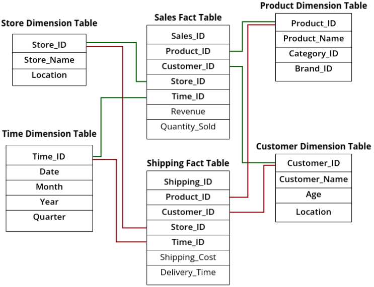

Data Warehouse Components
A data warehouse is made up of several components that work together to collect, store, and analyze data.
It follows a structured flow that ensures data is properly managed from its source to the final reports.
The data warehouse process can be divided into three main stages: Source Data,
Management and Control, and Information Delivery.
1. Source Data (Where the Data Comes From)
The first stage of a data warehouse involves gathering data from different sources. These can be internal
company systems, historical records, or even external third-party data.
- Production Data: This includes operational databases like customer transactions,
sales records, and employee details that come from daily business activities.
- Internal Data: Data collected within the organization, such as financial reports,
HR data, or customer feedback.
- Archived Data: Historical records that are no longer actively used in daily
operations but are stored for long-term analysis.
- External Data: Information from sources outside the organization, such as market
trends, competitor analysis, or third-party data providers.
- Data Staging: Before the data moves to the warehouse, it is temporarily stored and
processed in a staging area. Here, it undergoes cleaning, transformation, and integration to ensure
consistency.
2. Management and Control (Where the Data is Processed and Stored)
Once data is collected, it needs to be managed and stored efficiently. This stage ensures that data is
well-organized and ready for analysis.
- Metadata: This is "data about data." It keeps track of where the data came from,
how it was transformed, and how it is stored. Metadata helps users understand the structure and
meaning of the data.
- Data Warehouse DBMS: This is the core database where the processed data is stored.
It is optimized for fast retrieval and analysis.
- Data Mart: A smaller, specialized section of the data warehouse that focuses on a
specific department, such as sales or finance. This allows for faster, more relevant queries.
- Multidimensional DBMS: Unlike traditional databases that store data in tables,
multidimensional databases allow data to be organized in multiple dimensions (e.g., sales by region,
time, and product). This enables complex analysis.
- Data Storage: This includes the actual physical or cloud-based storage where all
the processed data is kept for future access.
3. Information Delivery (Where the Data is Used for Insights)
The final stage is where the data is used for decision-making. The processed and stored data is accessed
through various tools to generate meaningful insights.
- Data Mining: The process of discovering patterns, trends, and relationships in
large datasets. For example, a retailer might use data mining to find which products are often
bought together.
- OLAP (Online Analytical Processing): A technique that allows users to perform
complex queries and view data from multiple perspectives. For example, a company can analyze sales
trends across different regions and time periods.
- Report Query: Standard reports and ad-hoc queries that help businesses generate
dashboards and summaries. These reports help managers and executives make data-driven decisions.
A data warehouse is not just about storing data; it follows a structured process from data
collection to data processing and finally to data
analysis. Each component plays a key role in ensuring that businesses can make informed
decisions based on accurate and well-organized data.
Metadata and Its Types
Metadata is data about data. It provides detailed information about data’s source,
structure, transformations, and usage, ensuring efficient data management in a data warehouse.
Metadata plays a crucial role in organizing, processing, and retrieving data for analysis.
Why is Metadata Important?
- Ensures data consistency and accuracy.
- Helps in tracking data lineage (where data comes from and how it changes).
- Improves data governance and security.
- Supports ETL (Extraction, Transformation, and Loading) processes.
In a data warehouse, metadata is categorized into three main types:
1. Operational Metadata
Operational metadata tracks the workflow and execution details of the data
warehouse, ensuring smooth operation and troubleshooting.
- Records when and how data is loaded (ETL process logs).
- Tracks data refresh schedules, failures, and processing times.
- Helps in monitoring system performance and identifying bottlenecks.
Example: In an e-commerce data warehouse, operational metadata might include:
- Last ETL execution time – March 5, 2025, at 02:00 AM.
- Data refresh interval – Every 24 hours.
- Failed transactions log – 50 records failed due to missing customer IDs.
2. Extraction and Transformation Metadata
This type of metadata focuses on how data is extracted, cleaned, transformed, and loaded (ETL
process details).
- Documents data sources (ERP, CRM, databases, logs, external APIs).
- Tracks data transformation rules (format changes, filtering, aggregations).
- Ensures data mapping and consistency between different systems.
Example: In a banking data warehouse, extraction and transformation metadata might
include:
- Data source: Customer transactions database.
- Transformation applied: Convert transaction timestamps from UTC to IST.
- Data mapping: Cust_ID in CRM maps to Customer_ID in the warehouse.
3. End-User Metadata
End-user metadata provides business users and analysts with meaningful descriptions of
data, making it easier to interpret and use.
- Defines business terms and KPIs (Key Performance Indicators).
- Explains data relationships and usage in reports and dashboards.
- Allows users to search and retrieve relevant data easily.
Example: In a retail business intelligence system, end-user metadata might include:
- Total Revenue – The sum of all completed sales transactions.
- Customer Churn Rate – The percentage of customers who stop purchasing after
three months.
- Sales by Region – A report showing total sales grouped by geographic region.
Without metadata, navigating a data warehouse would be like searching for a book in a library without
a catalog—it would be difficult and inefficient.
Data Mart
A Data Mart is a smaller, specialized subset of a data warehouse that focuses on a
specific business function or department. It allows for faster access to relevant data, improving
decision-making for targeted users.
Why Create a Data Mart?
Organizations create data marts for several reasons, including:
- Faster Data Access: Data marts store only relevant data, making queries and
reports faster.
- Improved Performance: Reduces the load on the main data warehouse by handling
department-specific queries.
- Better Security: Limits access to sensitive information by restricting data to
relevant departments.
- Cost-Effective: Requires less storage and processing power compared to a full
data warehouse.
- Departmental Autonomy: Different teams can manage and optimize their own data
without affecting the central system.
Types of Data Marts
Data marts are categorized based on how they are created and maintained. The two main types are:
1. Dependent Data Mart
A Dependent Data Mart is created directly from an existing enterprise data
warehouse (EDW). It acts as a smaller, department-specific extension of the central
data warehouse.
- Data flows from the main data warehouse to the data mart.
- Ensures data consistency across different departments.
- Managed and controlled by the central IT team.
Example: A retail company has a main data warehouse storing all business data. A
dependent data mart is created for the marketing department to analyze customer
purchase patterns.
2. Independent Data Mart
An Independent Data Mart is a standalone system that does not rely on a central data
warehouse. It is designed to meet the needs of a specific business unit.
- Data is collected directly from operational databases, external sources, or other
applications.
- Does not require a centralized data warehouse.
- Faster and easier to implement but may lead to data inconsistencies across
departments.
Example: A healthcare organization sets up an independent data mart
for patient records, separate from the main hospital management system.
By using data marts, businesses can optimize data management, improve reporting efficiency, and make
informed decisions faster.
Multi-Dimensional Data Model
The Multi-Dimensional Data Model is a way of organizing and storing data in a data
warehouse that makes it easier to analyze from different perspectives. Instead of storing data in
traditional tables like a relational database, this model arranges data in multiple dimensions, making
it more efficient for reporting and business analysis.
What Data is Stored in a Data Warehouse?
Data in a data warehouse is stored in a structured format that allows for easy analysis across
different
categories, known as dimensions. Each piece of data is associated with multiple
dimensions to help understand trends, patterns, and insights.
- In simpler words: Data is categorized by different subjects, and each subject
is
analyzed across various dimensions.
- Example: Imagine you are analyzing sales in a retail store. If your subject
(fact)
is "Quantity Sold," then you can analyze it using different dimensions such as:
- Item Type: What type of item was sold? (e.g., Electronics, Clothing,
Groceries)
- Location: Where was the item sold? (e.g., New York, Mumbai, London)
- Time Period: When was it sold? (e.g., January 2024, Q1 2024, Last 7
Days)
- This means that the data warehouse stores information about items sold based on their
type,
the geographical location of the sale, and the time period in which they were sold.
How Does This Help?
By structuring data in a multi-dimensional model, businesses can quickly answer questions like:
- Which product category had the highest sales last month?
- How do sales vary across different regions?
- What were the most popular items sold during the holiday season?
This approach makes it easier to generate reports, perform data mining, and conduct business analysis
efficiently.
How is Data Represented in a Data Warehouse?
In a data warehouse, data is often represented in the form of a Data Cube. A data
cube allows us to group or combine data into a structured, multi-dimensional format, making it
easier to analyze from different perspectives.
What is a Data Cube?
- A Data Cube organizes data into multidimensional matrices, where each axis
(dimension) represents a specific category of data.
- It helps visualize complex data relationships in an easy-to-understand format.
Understanding the Multi-Dimensional Data Cube
Multi-dimensional data can be represented using a data cube, as shown below:
This figure illustrates a 3-Dimensional Data Model, where data is categorized based
on three different dimensions:
- X-Dimension: Item Type (e.g., Electronics, Clothing, Groceries)
- Y-Dimension: Time / Period (e.g., Q1 2024, Last Month, Holiday Season)
- Z-Dimension: Location (e.g., New York, Mumbai, London)
Each individual cell in this cube represents the number of items sold of a particular type
(X), in a specific location (Z), during a given time period
(Y).
Can We Add More Dimensions?
- What if we also want to include the store where the item was sold?
- We can add another dimension to include store details, such as the store ID or branch
location.
- However, adding more dimensions makes the data cube more complex and difficult to visualize.
Since a data cube can include multiple dimensions beyond just three, it is often referred to as an
N-Dimensional Data Model, where "N" represents the number of dimensions used in
data analysis.
Why Use a Data Cube?
- Allows for faster data retrieval for analysis.
- Makes it easy to analyze trends, patterns, and relationships between different business factors.
- Supports OLAP (Online Analytical Processing) operations, like slicing, dicing,
and drilling down into data.
Using a data cube helps businesses perform multi-dimensional analysis efficiently, making it a
crucial part of data warehousing.
Multi-Dimensional Data Model
The Multi-Dimensional Data Model (MDDM) was developed specifically for implementing
data warehouses and data marts. It provides both a structured way
to store data and a powerful mechanism for business analysis.
How Does the Multi-Dimensional Data Model Work?
- This model stores data in the form of a Data Cube, which organizes data into
multiple dimensions.
- Most data warehousing solutions use either two-dimensional or
three-dimensional cubes to analyze data.
- A data cube allows users to view and analyze data from multiple dimensions simultaneously.
Understanding Dimensions in Data Warehousing
In a data warehouse, dimensions refer to entities based on which an organization
wants to maintain records. These dimensions help in categorizing and analyzing data efficiently.
- Example: Consider a store that tracks its sales data. The main dimensions could
be:
- Time: Monthly sales, Quarterly reports, Annual performance.
- Item Type: Different product categories (Electronics, Groceries,
Clothing).
- Location: Sales across different branches and cities.
- These dimensions allow businesses to analyze data from different perspectives
and make better decisions.
Why Use a Multi-Dimensional Database?
- It helps businesses quickly and accurately answer data-related queries.
- It supports efficient storage and retrieval of large amounts of structured data.
- It enables users to perform complex data analysis using multiple perspectives.
Role of OLAP in Multi-Dimensional Data Models
Online Analytical Processing (OLAP) is a key component of multi-dimensional data
models. OLAP tools in data warehousing help users analyze data from multiple angles and dimensions.
- OLAP enables users to slice, dice, drill-down, and roll-up data for deeper
insights.
- It supports fast querying and analysis of large datasets, making
decision-making more efficient.
Components of Multi-Dimensional Data Model (MDDM)
The Multi-Dimensional Data Model (MDDM) is built on two key components:
Dimensions and Facts. These components help structure data for
analysis in a data warehouse.
Key Components of MDDM
- Dimensions: These provide descriptive context for analyzing data. Dimensions
categorize and organize business information.
- For example, in a sales database, common dimensions include Product, Time, Store
Location.
- Facts: These are the measurable business values stored in the fact table. They
represent performance metrics such as sales revenue or quantity sold.
- For example, a sales fact table may include Sales Amount, Quantity Sold,
Discount Applied.
Types of Tables in MDDM
There are two main types of tables in a Multi-Dimensional Data Model:
1. Dimension Tables
A dimension table stores descriptive attributes related to a subject. Each dimension
table has a Primary Key (PK) that uniquely identifies each record.
For example, in a college placement system, we have the following four dimension
tables:
- Student Dimension Table
- Primary Key: Student_ID
- Attributes: Student_Name, Course, Batch, CGPA
- Teacher Dimension Table
- Primary Key: Teacher_ID
- Attributes: Teacher_Name, Department, Experience
- TPO (Training & Placement Officer) Dimension Table
- Primary Key: TPO_ID
- Attributes: TPO_Name, Designation, Contact_Details
- Company Dimension Table
- Primary Key: Company_ID
- Attributes: Company_Name, Industry, Location, Hiring_Criteria
2. Fact Table
The Fact Table stores business metrics and contains only Foreign Keys
(FKs) that reference the primary keys from the dimension tables.
A fact table has two types of columns: one column of foreign keys (pointing to the dimension
tables) and other of numeric values.
For the college placement system, the Placement Fact Table will contain:
- Foreign Keys referencing Dimension Tables:
- Student_ID (from Student Dimension)
- Teacher_ID (from Teacher Dimension)
- TPO_ID (from TPO Dimension)
- Company_ID (from Company Dimension)
- Business Metrics (Facts):
- Interview_Date
- Result_Status (Selected/Rejected)
- Salary_Offered
How Dimension & Fact Tables Work Together
The Fact Table links different Dimension Tables to help analyze placement data. Some example queries
include:
- How many students were placed in a particular company?
- Query the Fact Table and join it with the Company Dimension
Table using Company_ID.
- Which teacher’s students had the highest selection rate?
- Query the Fact Table and join it with the Teacher Dimension
Table using Teacher_ID.
- How many students were placed by a particular TPO?
- Query the Fact Table and join it with the TPO Dimension
Table using TPO_ID.
Schemas for Multi-Dimensional Data
In data warehousing, schemas define how data is structured in a multi-dimensional model. The
well-known schemas are:
- Star Schema: A single Fact Table with multiple Dimension Tables directly linked
to it.
- Snowflake Schema: A single Fact Table with Dimension Tables organized
hierarchically through normalization.
- Fact Constellation Schema: Multiple Fact Tables sharing common Dimension
Tables.
Each schema has a Fact Table that stores all the facts about the subject or measure.
Each fact is associated with multiple dimension keys that link it to Dimension Tables.
Star Schema
- In the Star Schema, a central Fact Table is surrounded by multiple Dimension Tables. Each
Dimension Table contains descriptive attributes related to a particular aspect of the fact.
The Star Schema is the basic form of a dimensional data model, in which data are organized into facts
(quantitative data) and dimensions (qualitative attributes). This schema is widely used in data
warehouses for its simplicity and ease of use.
- The central Fact Table is typically large and contains numerical data. It does not have
redundancy, meaning that each piece of information is stored only once.
- Each row (or tuple) in the Fact Table contains a foreign key that links it to the corresponding
records in the Dimension Tables, which describe the details of the related dimension.
Example Scenario:
Consider a sales data warehouse. The Fact Table will store information about sales transactions, such
as sales revenue, quantity sold, and the time of sale. The Dimension Tables will store descriptive
attributes that provide context to these transactions, such as:
Problem: Redundancy
In the Star Schema, the Dimension Tables are typically denormalized, which means that some level of
data redundancy can occur. For example:
- In the Product Dimension Table, every time a sale of a specific product occurs, the Category and
Brand information is repeated for each sales transaction in the Fact Table.
- Similarly, for the Customer and Store dimensions, attributes such as Location are repeated for
every sale made in that store or by that customer.
Solution to Redundancy in Snowflake Schema:
- To reduce redundancy, we can implement the Snowflake Schema, where the Dimension Tables are
normalized into multiple related tables. Instead of storing all descriptive attributes in a
single table, we break them down into smaller tables to eliminate duplicate data.
Advantages of Star Schema:
- Simplicity: The structure of the Star Schema is intuitive and easy to
understand. The Fact Table is at the center, and the Dimension Tables are directly connected,
creating a clear and straightforward design.
- Efficient Querying: Because the schema is denormalized, there are fewer joins
between tables, which often results in faster query performance.
- Optimized for OLAP: The Star Schema is particularly well-suited for Online
Analytical Processing (OLAP), as it allows for fast and easy retrieval of aggregated data.
Snowflake Schema
The Snowflake Schema is an extension of the Star Schema, but it addresses the redundancy issue by
normalizing the Dimension Tables. In this schema, the Dimension Tables are broken down into multiple
related tables, forming a snowflake-like structure. This reduces redundancy and saves storage space
by avoiding the repetition of data.
How Snowflake Solves Redundancy:
- In the Star Schema, each Dimension Table contains repetitive information for each row in the
Fact Table. For example, product-related details like Category and Brand are repeated for each
sale of the same product. This can lead to a lot of redundant data and increases storage
requirements.
- In the Snowflake Schema, the Dimension Tables are split into smaller tables that are more
normalized. The repeated data is moved to separate tables, and relationships between these
tables are established using foreign keys.
Example Scenario:
Let’s take the same sales data warehouse example we used for the Star Schema:
- Star Schema Structure (before normalization):
In this structure, product details like Category and Brand are repeated multiple times in the Product
Dimension Table.
- Snowflake Schema Structure (after normalization): Now, we normalize the Product Dimension Table
to avoid redundancy. We create separate tables for Category and Brand, and link them using
foreign keys.
Key Points of Snowflake Schema:
- Normalization: Unlike the Star Schema, the Snowflake Schema normalizes the Dimension Tables,
breaking them down into smaller related tables.
- Reduction of Redundancy: By separating out repeating data (e.g., Category and Brand), redundancy
is reduced, making the schema more efficient in terms of storage.
- Increased Complexity: While Snowflake Schema reduces redundancy, it introduces more complexity
in terms of table structure and the relationships between tables. Queries may also become more
complex since multiple tables need to be joined.
Advantages of Snowflake Schema:
- Reduced Redundancy: By normalizing the Dimension Tables, repeated information (such as Category
or Brand) is stored only once, saving space.
- Improved Data Integrity: With less duplication of data, the chances of inconsistency or errors
are minimized.
- Efficient Storage: Reducing redundancy means that less storage space is required, especially for
large data warehouses.
Disadvantages of Snowflake Schema:
- Complex Queries: Since the data is split across multiple tables, queries may become more complex
and require multiple joins.
- Slower Query Performance: More joins can result in slower query performance, especially when
dealing with large datasets.
Difference between Star Schema and Snowflake Schema
- Normalization: Star schema uses a denormalized structure, while the Snowflake
schema uses a partially normalized structure.
- Query Performance: Star schema typically performs better for querying due to
fewer joins, whereas Snowflake schema can be slower because it involves more joins.
- Data Redundancy: Star schema has high data redundancy, whereas Snowflake schema
has low data redundancy.
- Disk Space: Star schema tends to occupy more disk space due to data
duplication, while Snowflake schema requires less disk space.
- Ease of Use: Star schema is easier to understand and implement, making it more
user-friendly for non-technical users. Snowflake schema requires more effort to design and
maintain.
- Storage Efficiency: Snowflake schema is more storage-efficient due to its
normalized structure, making it a better choice for large datasets and complex data
environments.
- Complexity: Star schema is simpler, while Snowflake schema is more complex due
to its multiple levels of dimension tables and normalization.
Fact Constellation Schema
- The Fact Constellation Schema is an advanced multi-dimensional data model where multiple Fact
Tables share common Dimension Tables. This schema is also known as a Galaxy Schema because it
represents a complex data warehouse structure with multiple facts (measures) connected to shared
dimensions.
- In Star Schema and Snowflake Schema, we have a single Fact Table with multiple Dimension Tables.
However, in large-scale business scenarios, organizations often need to analyze different types
of facts (e.g., sales, shipping, inventory) that are related to the same dimensions.
To handle this, Fact Constellation Schema allows multiple Fact Tables to share the same
Dimension Tables. This helps in handling complex queries efficiently and enables a multi-fact
analysis.
Example Scenario
Let’s take an e-commerce company that wants to analyze sales and shipping data. Instead of using a
single Fact Table, we create two:
- Sales Fact Table → Stores sales-related data.
- Shipping Fact Table → Stores shipping-related data.
Since both sales and shipping involve products, customers, stores, and time, these facts share common
Dimension Tables.

Key Points of Fact Constellation Schema:
- Multiple Fact Tables: Unlike Star and Snowflake schemas, which use a single Fact Table, Fact
Constellation Schema supports multiple Fact Tables.
- Shared Dimension Tables: The same Dimension Tables are used across multiple Fact Tables,
allowing for more efficient storage.
- Complex Data Relationships: This schema is suitable for large data warehouses where multiple
business processes are analyzed.
Advantages of Fact Constellation Schema:
- Better Representation of Real-World Data: Organizations often deal with multiple facts, and this
schema captures them effectively.
- Efficient for Multi-Fact Analysis: Allows analyzing multiple business processes (e.g., sales and
shipping) together.
- Optimized for Large Data Warehouses: Suitable for businesses with large and complex datasets.
Disadvantages of Fact Constellation Schema:
- Complex Query Processing: Since multiple Fact Tables and Dimension Tables are involved, queries
can become complex.
- Increased Maintenance Effort: Managing multiple Fact Tables requires extra maintenance and
careful database design.